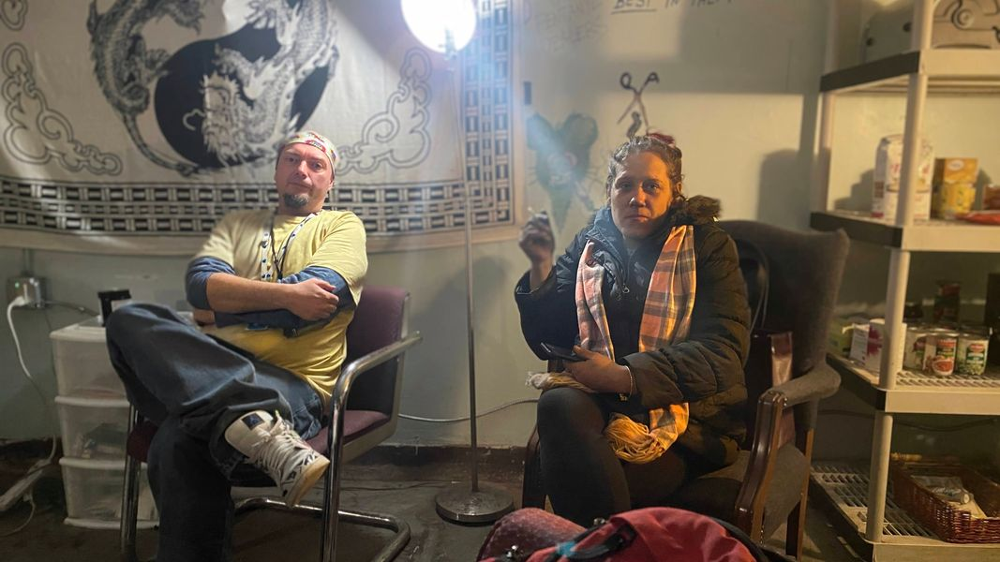

Timeline photos
This is Ryan and Kristyn.
They saved the life of a very dear friend of ours yesterday. Ryan and a man named Jeff saved his life a couple days earlier.
Ryan and his friend Leslie have been filling known places where homeless people hang out in Middlebury with Narcan. Without the Narcan, this man would be dead. Another man died on the tracks this week in Middlebury from an overdose because he didn't have a friend with Narcan.
Leslie had taught Kristyn CPR. Kristyn did both chest compressions and breathing on this man.
He was brought back twice with Narcan and then slipped back into death in yesterday's situation.
He is trying to kill himself. He has told people this. He is also looking for a gun.
I witnessed an overdose once years ago. It is a very shocking experience to see someone who is dead. They are totally limp. They are gone. It is truly traumatic.
Most homeless people have experienced multiple overdoses along the way.
I am deeply, deeply thankful for these people who have saved this man. Getting Narcan in the right place at the right time and having someone know how and when to use it is truly a miracle.
To this friend of ours: I know the feeling you have. I know the feeling of mortal shame and self-hatred. I know very well why you think it is not worth going on. You are in a deep pit of despair that looks hopeless and insurmountable. I get it.
Remember when Hermaine was shot and we lost our house to the city condemning it? Remember all the times we have had our communities destroyed by city forces? Remember how hopeless it all looked? Remember how we just started again and built something else really cool and interesting? Remember what we are building right now?
We need you. We want you. You are a beautiful force in the heart of darkness. You bring light to us when all we can see is darkness.
Don't give up. We need you. We want you.
We love you.